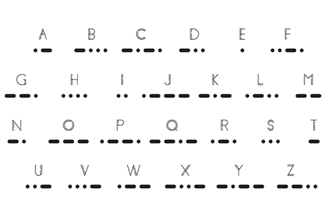
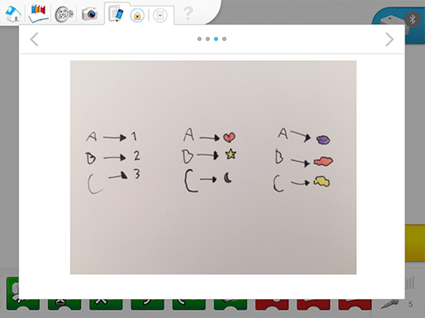

Group Discussion Questions
-
What are some ways to send messages from one place to another?
For a long time, we have used wires and electricity to transmit messages from one place to another. Waves are also commonly used to transmit messages over longer distances. Light and electricity are good examples of technologies used to send signals. Light and electricity are called “binary phenomenon” because they have two states (light and no light). Binary systems that make use of electricity are the foundation of modern communication.
-
What is one way to convert or change a message into a signal?
Elements such as light, sound, images could be explored. Have a discussion with your students about the importance of both the sender and the receiver having the same code when exchanging a message.
Setting the Scene for This Project
One part of this project is based on the exploration of Morse code, in which each letter and number is represented by a series of short and long signals (e.g., short sounds and long sounds). The purpose of this project is not to learn Morse code, but to learn how to use its system. Make the Morse code system available to your students so they can use it in this project. In the second part of this project, the students will have to invent a system on their own.

Enabeling students to simplify the problem (Decomposition)
Decomposition is the main skill being developed during this phase. Therefore, the focus is on enabling students to decompose the problem.
In other words:
Is the student able to explain the problem by themselves?
Is the student able to describe how they will evaluate whether or not they were successful in solving the problem?
Is the student able to break down the problem into smaller and more manageable parts?
Suggested breakdown of this problem:
How can we convert a message into a signal?
Is it better to convert sentences, words, or letters?
What output can be used (e.g., sounds, light, images)?
Here is an example of how your students could have documented their ideas using the Documentation tool.

The text highlighted in green in the student pages suggests a place where they should document their work.
In the Explore phase, feedback should relate to whether or not the student is actively involved in the discussion by asking and answering questions, and their level of understanding of the problem.
Feedback can be given on a scale of 1 to 4:
-
The student is unable to provide answers to questions or adequately participate in class discussions.
-
With prompting, the student is able to provide answers to questions or adequately participate in class discussions.
-
The student is able to provide adequate answers to questions and participate in class discussions.
-
The student is able to provide extended explanations during class discussions.
Specific rubrics for assessing computational thinking skills can be found in the Teacher guide.